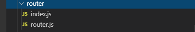

路由（完成）
- 路由文件结构

- main.js使用路由
import { router } from './router/index' // 导入路由配置
Vue.use(vueg, router) // 使用路由和动画组件
// vue初始化函数封装
function initVue () {
vm = new Vue({
el: '#app', // vue控制渲染挂载的节点id 与下面的.$mount('#app') 重复了
store, // 使用vuex的store
router, // 使用路由
render: h => h(App) // 渲染根组件
}).$mount('#app') // 在Vue构造函数时，需要配置一个el属性，如果没有没有el属性时，可以使用.$mount('#app')进行挂载。
}
- 路由配置解析
index.js
import Vue from 'vue' // 导入vue
import VueRouter from 'vue-router' // 导入vue-router
import astore from '@/libs/astore' // 自定义的数据持久化模块
import { routers } from './router' // 自定义路由配置文件
Vue.use(VueRouter) //在vue里面使用vue-router
VueRouter.prototype.goBack = function () { // 路由原型上挂一个返回函数，调用即返回刷新
this.isBack = true
window.history.go(-1)
window.location.reload(); //刷新
window.history.go(1); //前进
window.history.go(-1); //返回+刷新
window.history.forward(); //前进
window.history.back(); //返回
}
// 路由配置
const RouterConfig = {
// mode: 'history',
routes: routers // 使用自定义的路由配置path文件
}
export const router = new VueRouter(RouterConfig) // 使用路由配置实例化路由
router.beforeEach((to, from, next) => { // 路由导航守卫
const accessToken = astore.getAccessToken() // 获取持久化的token数据
// token不存在同时又想进入除了login,forgot页面，则不让用户进入，重新让用户进入登录页
if (!accessToken && to.name !== 'login' && to.name !== 'forgot') {
// 判断是否已经登录且前往的页面不是登录页
next({
name: 'login'
})
} else if (accessToken && to.name === 'login') { // 判断是否已经登录且前往的是登录页，直接进入主页
next({
name: 'home'
})
} else { //token存在，让用户想去哪里就去哪里？别急，先调用函数处理
toDefaultPage(routers, to.name, router, next)
}
})
function toDefaultPage (routers, name, route, next) {
let len = routers.length
let i = 0
let notHandle = true
while (i < len) {
if (routers[i].name === name && routers[i].children && routers[i].redirect === undefined) {
route.replace({
name: routers[i].children[0].name // 对拥有子路由的配置，如果定位到了她，就把路由指向其第一个孩子节点
})
notHandle = false
next() // 这里其实有递归的操作，比如孩子路由还有孩子，重复进行
break
}
i++
}
if (notHandle) { // ？？？？
next()
}
}
router.js
// 导出一个路由配置数组
export const routers = []
数组成员是许多对象： {
path: '/', // url
name: 'home', // 名字，路由跳转会使用到
component: Home, // 组件直接引用，当前js文件开头需要import，下面介绍异步引入，提升性能
children: []//子路由
}
异步组件： {
path: '/', // url
name: 'home', // 名字，路由跳转会使用到
component: () => import('@/views/ticket/ticket-index.vue'), // 需要的时候才导入，不需要在当前文件前import
children: []//子路由
}

路由的使用：（params和query两种大类）
- params:
方法里面跳转
openProtocol () {
this.$router.push({name: 'agreement', params: {roomId : 123}})
},
路由参数获取(两种方式)：
this.$route.params.roomId
const { roomId } = this.$route.params
- query:
路由配置需要显示指明url参数
{
path: '/room/:roomId',
name: 'room-detail',
component: () => import('@/views/device/room/room-detail.vue')
},
openProtocol () {
this.$router.push({name: 'agreement', query: {roomId: 1}})
},
路由参数获取(两种方式)：
this.$route.query.roomId
const { roomId } = this.$route.query